full-dataset-6191-Piazza
"full-dataset-6191-Piazza: 7232 rows x 27 columns"
full-dataset-6191-f23
"full-dataset-6191-f23: 9137 rows x 29 columns"
full-dataset-6123-s24
"full-dataset-6123-s24: 9248 rows x 29 columns"
full-dataset-5183-a24
"full-dataset-5183-a24: 13013 rows x 29 columns" JeepyTA Refined Analysis
Overview
This Quarto document has a complete JeepyTA analysis in R.
The framing throughout is intentionally cautious: these are exploratory quantitative comparisons, not strong causal estimates. The analysis begins by auditing annotation coverage and JeepyTA deployment, then turns to three substantive questions: cross-course SRL profiles, interaction ecology inside the forums, and exploratory grade-linked mediation pathways. Throughout, 6123_JeepyTA and 5183_JeepyTA function as the primary fully AI-supported comparison cases, while 6191_JeepyTA is treated as a low-penetration contextual case rather than as a mature AI-supported forum. The main analytic unit is the coded student sentence, with later sections adding thread- and student-level summaries where needed.
This document is also meant to function as a worked example of analytic reasoning, not just as a report of findings. For that reason, the markdown is deliberately more explicit than a conventional paper draft would be. Where possible, each section explains three things: why a particular method was chosen, what variables enter the analysis, and how the output should be interpreted in substantive terms. The goal is to make the transition from raw forum data to statistical result easier to follow by bridging descriptive and model-based analyses.
A useful way to read the document is:
- start with the descriptive figures and tables,
- ask what variables are being compared,
- then use the statistical tests and models as a more formal check on the same patterns.
That reading order is intentional. In most sections, the figures come first because they are the easiest way to understand what the model is trying to summarize.
Setup and helper functions
Paths and dataset metadata
Data import
Helper functions
JeepyTA deployment breadth
The next step is to establish how broadly JeepyTA actually participated in the AI-supported courses, because later human-only versus human+AI contrasts only make sense if the AI-supported forums were meaningfully exposed to bot participation.
Conceptually, this section asks: when we say a course is “AI-supported,” how supported was it actually?
Deployment metrics
Read these deployment summaries as exposure measures. They do not tell us whether JeepyTA improved or harmed anything; they tell us how deeply it was integrated into the visible interaction flow of each course.
| Dataset | JeepyTA posts | Students | Students reached | Students reached (%) | Student posts | Posts followed by JeepyTA | Posts followed (%) |
|---|---|---|---|---|---|---|---|
| 6191 JeepyTA | 23 | 56 | 11 | 19.6 | 1,170 | 18 | 1.5 |
| 6123 JeepyTA | 248 | 45 | 40 | 88.9 | 507 | 209 | 41.2 |
| 5183 JeepyTA | 177 | 39 | 37 | 94.9 | 824 | 175 | 21.2 |
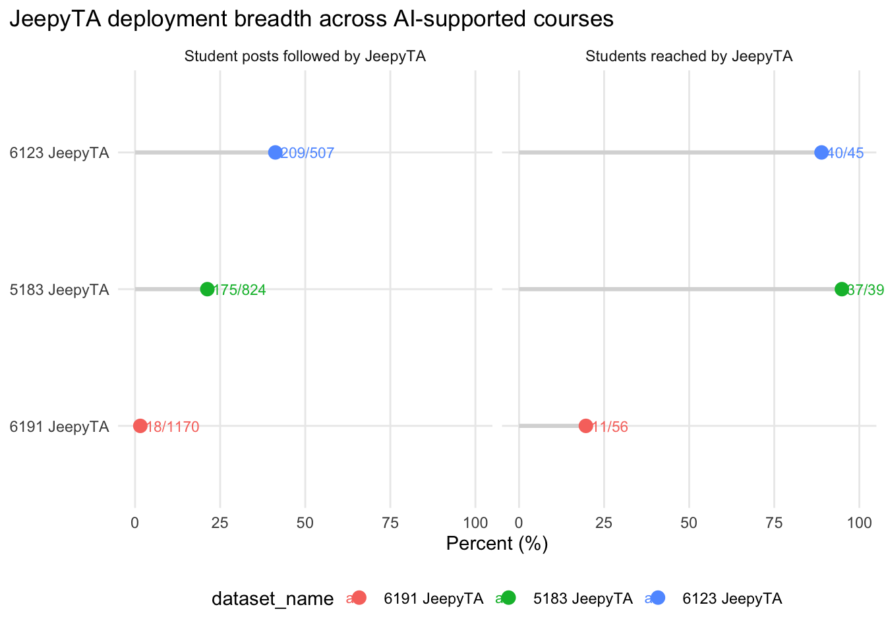
This deployment section is substantively important, not just descriptive bookkeeping. It shows that the three AI-supported courses differ sharply in bot reach. In particular, 6191_JeepyTA should be treated as a selective or limited-exposure case rather than as a mature AI-supported forum. That matters for interpretation throughout the rest of the document: 6123_JeepyTA and 5183_JeepyTA should anchor the main human-only versus human+AI comparison, while 6191_JeepyTA remains a useful side comparison.
The logic of the deployment metrics is straightforward. share_of_students_reached_pct asks how broadly JeepyTA touched the student population at all: what fraction of students had at least one post followed by JeepyTA? share_of_student_posts_followed_pct asks how frequently JeepyTA appeared in the flow of student posting: what fraction of student posts were followed by a JeepyTA response? Those two measures capture different aspects of exposure. A course could, in principle, reach many students very lightly or a smaller set of students more intensively. Looking at both helps clarify whether a course should be treated as broadly bot-mediated or only selectively bot-exposed.
RQ1 — SRL profiles across courses
RQ1: How does the introduction of AI-mediated teaching assistance shape students’ deployment of self-regulated learning strategies in online programming discussion forums?
RQ1 is organized in two parts. The first asks how SRL profiles differ across courses overall; the second asks how those profiles change over the internal timeline of each course. Throughout both parts, 6191_JeepyTA remains analytically visible as the limited-exposure AI case rather than being dropped from the comparison.
The analysis proceeds from simpler to more detailed descriptions. That ordering is intentional. It is easier to first ask a broad question—whether student discourse is SRL-coded at all—before moving to the more detailed question of which SRL categories are more or less common, and only then to ask how those category profiles shift over time. The unit throughout this section is the coded student sentence. That means each row in the analytic data represents one student-authored sentence that received an SRL code.
The easiest way to read RQ1 is:
- binary baseline,
- full category composition,
- summarized support-regime comparison,
- temporal trajectories,
- then model-based checks.
RQ1A. Cross-course SRL profiles
This first half of RQ1 is about cross-sectional profile differences. It asks what the SRL composition looks like when we summarize student discourse across whole courses.
Binary baseline: SRL-coded vs Non-SRL
Start here if the full SRL codebook feels too detailed at first. This subsection uses the simplest possible contrast.
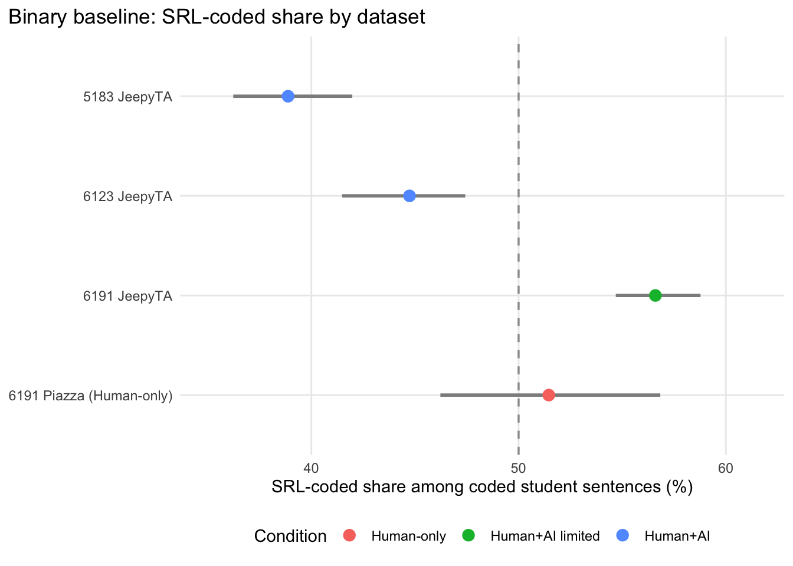
This binary baseline is useful because it separates a simple question from the more detailed SRL composition analysis: how much of the coded student discourse is SRL-coded at all, rather than Non-SRL? Any later category-level differences should be interpreted against this broader baseline rather than in isolation.
Methodologically, this is the most accessible starting point because the outcome has only two categories: SRL-coded and Non-SRL. In the figure, each point is the estimated SRL-coded share for one dataset, and the horizontal interval shows the bootstrap confidence interval around that share. The x-axis therefore answers a very concrete question: out of all coded student sentences in a dataset, what proportion contain any SRL content rather than logistical or otherwise non-SRL content? This broad baseline matters because later category-level differences can be misleading if one course simply contains much more or much less SRL-coded discourse overall.
Binary effect-size summary
This model is best read as a compact numerical summary of the previous figure, not as a separate substantive result.
| Condition | OR | CI low | CI high | p | |
|---|---|---|---|---|---|
| Human+AI limited | 1.230 | 1.151 | 1.316 | 0.000 | *** |
| Human+AI | 0.654 | 0.615 | 0.695 | 0.000 | *** |
The logistic model simply condenses the binary plot into one descriptive effect-size estimate per condition. These odds ratios should be read cautiously: the model uses sentence-level observations and does not include clustered standard errors, so the p-values are better treated as descriptive indicators than as strong inferential claims.
The reason for adding a logistic regression here is not to replace the figure, but to summarize the same binary contrast in a familiar model-based form. The dependent variable is is_srl, which equals 1 when a coded student sentence is SRL-coded and 0 when it is Non-SRL. The predictor is condition, which has three levels: Human-only, Human+AI limited, and Human+AI. Logistic regression is appropriate because the outcome is binary. Its coefficients are easier to interpret after exponentiation, which is why the table reports odds ratios rather than raw log-odds coefficients. An odds ratio above 1 means a condition has a higher SRL-coded share than the human-only baseline; an odds ratio below 1 means a lower SRL-coded share than the human-only baseline.
Relative to the human-only baseline, the estimated odds that a coded student sentence is SRL-coded are 1.23 times as large in the limited-AI 6191_JeepyTA course and 0.65 times as large in the pooled fully AI-supported courses. Those estimates summarize direction and magnitude more usefully than the p-values alone, even though they should still be treated as descriptive sentence-level contrasts.
Substantively, this already hints that the AI-supported courses should not be treated as a single undifferentiated group. The limited-AI 6191_JeepyTA course looks different from the pooled mature AI-supported courses at the binary level. That is one reason the next step returns to the four-dataset view rather than jumping immediately to a pooled human-only versus AI-only contrast.
SRL composition across all four datasets
This is the main descriptive figure for the category-level comparison. Read it carefully before looking at the pooled support-regime summary below.
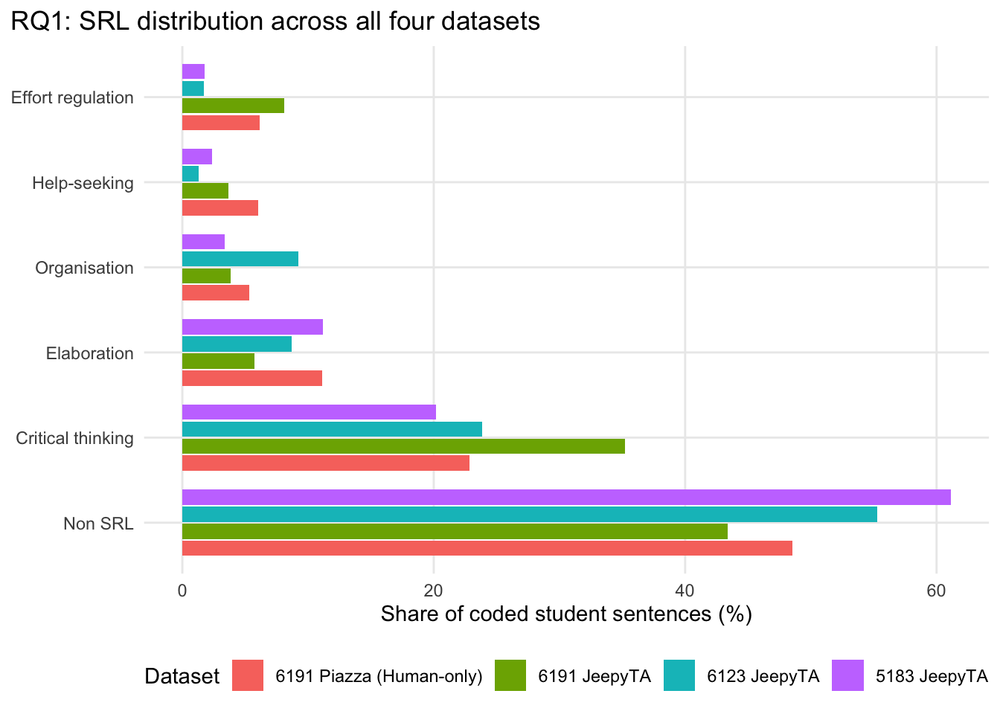
This figure should be read before the condition-level summary. Its purpose is to keep the broad comparison honest by showing all four datasets side by side. In particular, it keeps 6191_JeepyTA visible as a low-penetration AI case that often sits between the human-only course and the two mature AI-supported courses rather than simply collapsing into either group.
This grouped bar chart moves from the binary question to the full SRL composition question. The variable on the y-axis is label_display, which names the six SRL codebook categories. The x-axis gives the share of coded student sentences in each category. Each color corresponds to one dataset, not to one broad condition. That choice is deliberate: before pooling anything, we need to see whether the two mature AI-supported courses actually resemble one another and whether the limited-AI 6191_JeepyTA course looks more like the human-only course, more like the mature AI courses, or something in between.
This figure is therefore doing an important comparability job. It helps prevent over-interpretation of the pooled contrasts that follow. If the mature AI-supported courses and the limited-AI course all looked extremely similar, pooling would be less consequential. But if 6191_JeepyTA visibly departs from the mature AI pattern, that is itself part of the RQ1 result.
Condition-level summary across the three support regimes
This subsection shifts from the four-course view to the three-regime view. It is meant to simplify the descriptive story after we have already seen the underlying heterogeneity.
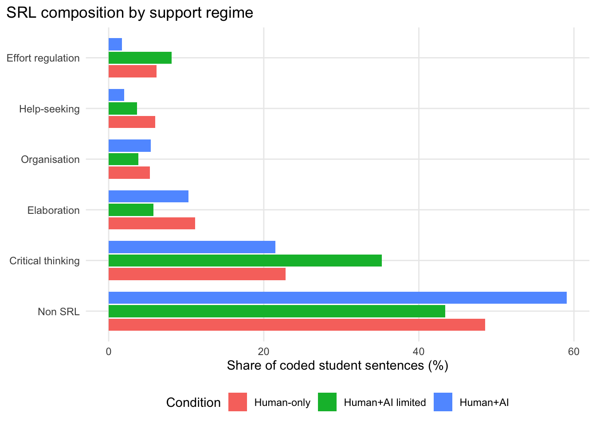
This summary keeps all three support regimes in view while still simplifying the four-dataset picture. It makes it easier to compare the human-only course, the limited-AI 6191_JeepyTA case, and the pooled mature AI-supported courses without dropping the limited-exposure course from the main RQ1 narrative.
The reason for this summary figure is interpretive rather than statistical. After the four-dataset chart establishes the underlying heterogeneity, it is useful to step up one level of abstraction and ask what the SRL profile looks like for the three broader support regimes. The plotted variable is still the category share, but now the grouping variable is condition rather than dataset_name. In other words, this chart answers: if we summarize the discourse at the level of support regime, how do the category profiles compare across human-only, limited-AI, and mature AI-supported settings?
The key point is that this is not replacing the four-dataset chart; it is summarizing it. The all-datasets figure remains the more detailed descriptive view, while this condition-level figure provides a cleaner high-level comparison once we have already seen that the limited-AI course should remain analytically distinct.
Descriptive chi-square check for support regime
This is the direct statistical companion to the support-regime summary plot. It asks whether SRL category composition is independent of the three support regimes.
| Descriptive omnibus test | Chi-square | df | p |
|---|---|---|---|
| Support regime by SRL category | 1405.414 | 10 | 6.72e-296 |
The contingency table here has one dimension for condition (Human-only, Human+AI limited, Human+AI) and one dimension for srl_label (the six SRL categories). The null hypothesis is that category composition is independent of support regime. If that null were plausible, the bars in the summary figure would differ only by random fluctuation. A large chi-square statistic instead indicates that the category distribution changes systematically across the three support regimes.
Multinomial model for support-regime differences
This model follows the chi-square test in the same way that the temporal multinomial model follows the temporal chi-square test below. The chi-square test asks whether the condition-by-category table is structured at all; the multinomial model asks how the relative odds of each SRL category differ by support regime when Non-SRL is treated as the reference category.
| Model comparison | LR chi-square | df diff | p |
|---|---|---|---|
| Support regime effect on SRL category | 1426.638 | 10 | 1.76e-300 |
| SRL category | Contrast | RRR | CI low | CI high | p |
|---|---|---|---|---|---|
| Critical thinking | Human+AI limited vs Human-only | 1.725 | 1.592 | 1.870 | 0.00e+00 |
| Critical thinking | Human+AI vs Human-only | 0.774 | 0.717 | 0.835 | 4.66e-11 |
| Elaboration | Human+AI limited vs Human-only | 0.579 | 0.509 | 0.659 | 0.00e+00 |
| Elaboration | Human+AI vs Human-only | 0.762 | 0.689 | 0.843 | 1.24e-07 |
| Organisation | Human+AI limited vs Human-only | 0.804 | 0.682 | 0.948 | 9.27e-03 |
| Organisation | Human+AI vs Human-only | 0.838 | 0.730 | 0.961 | 1.13e-02 |
| Help-seeking | Human+AI limited vs Human-only | 0.683 | 0.581 | 0.804 | 4.23e-06 |
| Help-seeking | Human+AI vs Human-only | 0.271 | 0.230 | 0.320 | 0.00e+00 |
| Effort regulation | Human+AI limited vs Human-only | 1.476 | 1.289 | 1.691 | 1.75e-08 |
| Effort regulation | Human+AI vs Human-only | 0.231 | 0.195 | 0.275 | 0.00e+00 |
The multinomial model is appropriate because the outcome now has more than two categories. Here the dependent variable is outcome, which is just srl_label with Non-SRL set as the reference level. The predictor is condition. The omnibus likelihood-ratio test compares a null model with no condition effect to a model in which SRL category membership varies by support regime. A significant result means that allowing SRL composition to differ across the three support regimes improves fit over a model that assumes the same category distribution everywhere.
The support-regime chi-square test indicates that SRL category composition differs across the three support regimes overall (χ²(10) = 1405.41, p < .001). The multinomial model gives the same high-level answer in model-based form: adding condition substantially improves fit relative to a null model (LR χ²(10) = 1426.64, p < .001). The coefficient table should be read as a set of relative comparisons against the Human-only baseline, with Non-SRL as the reference outcome. A relative risk ratio above 1 means a category is more common relative to Non-SRL than in the human-only condition; a value below 1 means it is less common relative to Non-SRL.
Together, the summary plot, chi-square test, and multinomial model provide a compact analogue to the temporal analysis that follows. The figure shows the category profiles directly, the chi-square test checks whether those profiles differ overall, and the multinomial model summarizes the regime contrasts in a form that can be interpreted category by category.
RQ1B. Temporal SRL trajectories across courses
This second half of RQ1 is about within-course change over time. Instead of asking only what the courses look like overall, it asks whether their SRL profiles develop in similar or different ways across the course timeline.
Temporal change in SRL over the course
The temporal analysis is presented using a two-half partition of each course. The choice to use halves instead of finer partitions is intended to make both the figures and the statistical tests easier to read. The central question stays the same: do the courses look similar or different when we compare earlier-course discourse with later-course discourse? H1 combines the first half of the course timeline and H2 combines the second half. This is not meant to imply identical calendar timing across courses; it is still a relative within-course partition.
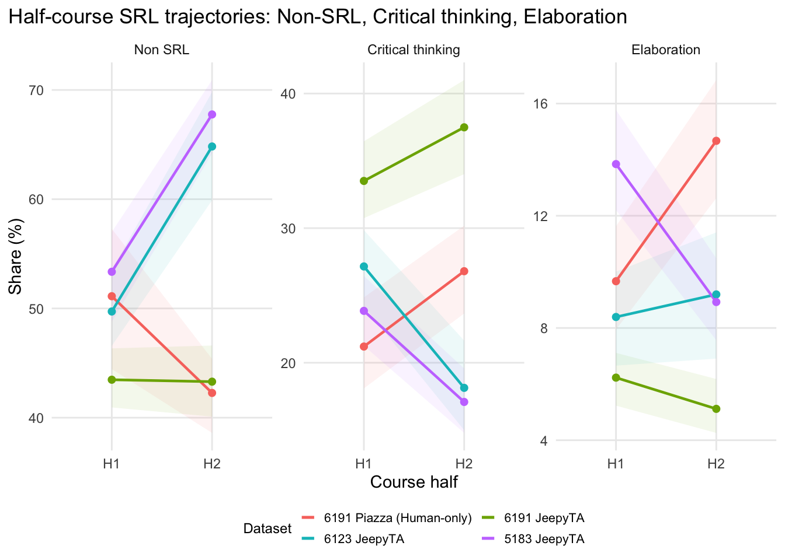
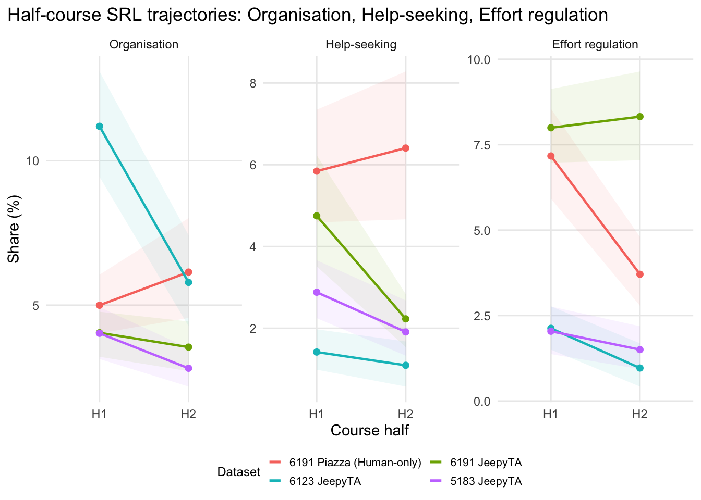
These half-based plots are the main descriptive results for the temporal section. They answer the question “Do the courses look different when we compare the first half of the course with the second half?”
The bootstrap intervals play the same role here that they played earlier in RQ1. They show uncertainty around the observed category shares without requiring a stronger model at the first step. Each line tracks one dataset across the two halves, and each panel isolates one SRL category. The first figure focuses on the most substantively prominent categories; the second retains the remaining categories so that the full codebook remains visible.
Descriptive chi-square check for the half-based analysis
This is the easiest statistical entry point for the half-based temporal analysis. It asks whether the 8 dataset-by-half cells differ in SRL composition overall.
| Descriptive omnibus test | Chi-square | df | p |
|---|---|---|---|
| Dataset-half cell by SRL category | 2124.204 | 35 | 0 |
Here the contingency table has 8 dataset × course_half cells. The null hypothesis is that SRL category composition is independent of those cells. If that null were plausible, the half-course plots would differ only by random fluctuation. A large chi-square statistic instead indicates that the early-versus-late distribution changes systematically across the dataset-half cells.
This is a useful bridge between the figures and the regression because it formalizes the overall structure without the need to interpret model coefficients yet.
Multinomial model for the half-based analysis
This model is the more demanding follow-up question. It asks not just whether the dataset-half cells differ overall, but whether the early-versus-late shift itself differs across courses.
The half-based multinomial model mirrors the earlier temporal multinomial logic, but substitutes course_half for a more fine-grained time variable.
| Model comparison | LR chi-square | df diff | p |
|---|---|---|---|
| dataset_name * course_half interaction | 350.537 | 15 | 1.62e-65 |
The multinomial model is used because the dependent variable is again multi-category rather than binary. Here the outcome is srl_label, with Non-SRL treated as the reference category. The predictors are dataset_name, course_half, and then their interaction. The additive model asks whether datasets differ overall and whether first-half versus second-half differs overall. The interaction model asks the sharper question raised by the plots: does the early-to-late shift depend on which course we are looking at?
The half-based chi-square test indicates that SRL category composition differs across the 8 dataset-half cells overall (χ²(35) = 2124.20, p < .001). The half-based multinomial model gives the same qualitative conclusion in model-comparison form: allowing the first-half versus second-half shift to differ across datasets improves fit relative to an additive model (LR χ²(15) = 350.54, p < .001).
Interpreting these two results together is helpful. The chi-square test says the overall dataset-half by category table is strongly structured. The multinomial comparison then clarifies why: the courses are not just different in average category composition; they also differ in their early-versus-late temporal shift. That is the main model-based support for the visual impression from the half-course plots.
The mature AI-supported courses look different from the two 6191 courses, especially in later-course movement toward more Non-SRL discourse and lower shares of some SRL categories, whereas the limited-AI 6191_JeepyTA course remains more stable and often more human-like by comparison. What the half-based version gives up is the ability to show exactly when inside the middle of the course a shift occurs. What it gains is a cleaner, more interpretable comparison between early and late course dynamics.
For figure interpretation, the most important reading strategy is again to compare broad early-versus-late patterns rather than isolated values. The question is not whether one point is slightly above another, but whether a course shifts directionally from H1 to H2, and whether that shift resembles or departs from the patterns in the other courses. On that reading, the half-based figures make it clear that 6191_JeepyTA is not simply a weaker version of the mature AI courses. It often remains closer to the human-only course, while the mature AI-supported courses show stronger late-course movement in several categories.
Those temporal differences motivate the next question. If SRL composition varies not only across courses but also across the internal trajectory of each course, the next step is to ask what kind of interaction ecology might help produce those differences: where JeepyTA appears, who responds to students, and what kinds of assignment-support conversations are sustained in the different forums.
RQ2 — Interaction / responder ecology
RQ2: How do forum interaction ecologies—and the SRL profiles associated with them—differ when teaching assistance in online discussion forums is provided solely by humans versus jointly by human and AI teaching assistants?
This section reframes the human-only versus human+AI comparison as an interaction-ecology question rather than only a label-distribution question. The strongest contrast still comes from comparing 6191_Piazza with the two mature AI-supported courses (6123_JeepyTA, 5183_JeepyTA), while 6191_JeepyTA remains a useful low-penetration contextual case rather than the main AI comparison. The central argument is that the mature AI-supported forums differ partly because JeepyTA is not acting as a general responder across the whole forum: it is concentrated in a narrower assignment-support niche, and that ecological niche helps make sense of both the responder-role SRL contrasts and the conversation shapes that follow.
The shift from RQ1 to RQ2 is a shift from composition to mechanism-like description. RQ1 asked what kinds of SRL discourse appear across courses. RQ2 asks where that discourse is situated in the interaction structure of the forum. This is a useful distinction: differences in category frequencies do not explain themselves. If one course has more or less of a given SRL category, one natural next question is whether students are encountering a different pattern of responders, thread types, or conversational trajectories.
The easiest way to read RQ2 is:
- identify where JeepyTA appears,
- identify who tends to respond,
- examine how those threads are structured,
- then connect that ecology back to the SRL patterns from RQ1.
RQ2A. Framing the comparison
This framing subsection states the main interpretive claim of RQ2 before the evidence is shown: the AI-supported courses differ not only in SRL composition, but in forum ecology.
The earlier sections already suggested that the mature AI-supported courses are not simply scaled-up versions of the human-only Piazza forum. For RQ2, the key interpretive move is to connect those between-course differences to the forum’s internal ecology: where JeepyTA actually appears, who tends to take up student posts next, and what kind of assignment-support conversations that pattern seems to sustain. Throughout this section, the main human-only versus human+AI comparison therefore centers 6191_Piazza against 6123_JeepyTA and 5183_JeepyTA, while 6191_JeepyTA is kept analytically visible as a contextual low-penetration case.
In practice, that means the analysis is no longer treating the forum as a single undifferentiated pool of messages. Instead, it treats the forum as an environment with internal structure: some threads are assignment-related, some are not; some student posts are followed by peers, some by teachers, some by JeepyTA; some conversations expand, while others close quickly. RQ2 therefore uses thread-level and responder-level summaries in addition to sentence-level SRL coding.
To understand that comparison, the first step is to locate where JeepyTA is actually active inside the forum rather than treating the AI-supported courses as uniform environments.
RQ2B. Where JeepyTA appears: assignment-support niche
This subsection begins with the most basic ecological question: in what kinds of threads does JeepyTA actually appear as a responder?
Preliminary investigation suggests that JeepyTA does not appear evenly across forum activity. In the mature AI-supported courses, it seems to be concentrated in a narrower assignment/problem-support niche rather than operating as a general-purpose responder across all thread types. Establishing that niche is important because it provides the ecological premise for the responder-role and conversation-shape analyses that follow.
Build thread-level assignment ecology tables
This is mainly a construction step. The important output is a thread-level table that says whether a thread is assignment-related and who responds first.
| Dataset | Assignment classifier | Threads |
|---|---|---|
| 6191 Piazza (Human-only) | text_rule | 224 |
| 6191 JeepyTA | tag | 304 |
| 6123 JeepyTA | tag | 217 |
| 5183 JeepyTA | tag | 231 |
Assignment threads are identified conservatively. In the JeepyTA courses, the classifier uses thread tags such as assignment labels; in 6191_Piazza, where tags are unavailable, it falls back to a conservative opening-post text rule. The goal here is not a perfect taxonomy of every academic thread, but a cautious comparable subset of explicit assignment/problem discussions.
This construction step matters because the later RQ2 analyses depend on having a plausible thread-type variable. The key variable is assignment_thread, a Boolean indicator for whether a thread appears to be an assignment or problem-support discussion. Because the source platforms differ, the assignment classification also differs slightly by dataset: tag-based when reliable tags exist, text-rule-based when they do not. That is less elegant than a single universal classifier, but it is a more defensible way to preserve comparability across platform contexts.
JeepyTA specialization by thread type
Read this subsection as a contingency-table analysis with one descriptive plot and two follow-up tests. The plot shows the responder mix across thread types within Piazza and the mature AI-supported forums. The two tests then answer more targeted questions: one asks whether JeepyTA is specifically concentrated in assignment threads inside the mature AI forums, and the other asks whether the human responder mix (Student versus Teacher) differs by thread type across mature AI and Piazza once JeepyTA is set aside.
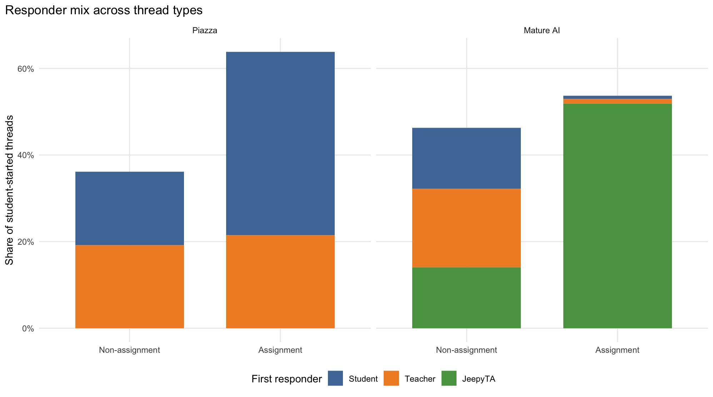
| Focused niche test | Chi-square | df | p | Odds ratio | CI low | CI high |
|---|---|---|---|---|---|---|
| Mature AI: assignment thread by JeepyTA-first vs human-first | 178.83 | 1 | 8.73e-41 | 62.72 | 27.34 | 169.05 |
| Human-responder interaction test | LR chi-square | df | p |
|---|---|---|---|
| Human responders only: course family by thread type interaction | 1 | 1 | 0.317 |
The plot shows the responder mix across thread types within each course family, with all observed responder roles included directly. Because the bars use overall proportions, both the total height of the assignment versus non-assignment bars and the responder composition inside them are informative. This makes the descriptive comparison more complete: Piazza shows only human responders, whereas mature AI shows the additional JeepyTA segment concentrated in assignment threads.
The first test focuses directly on the key niche question inside the mature AI forums: are assignment threads more likely than non-assignment threads to be JeepyTA-first rather than human-first? The answer is clearly yes. In the pooled mature AI-supported courses, assignment-thread status is strongly associated with whether the first responder is JeepyTA or a human (χ²(1) = 178.83, p < .001), and the odds that a thread is JeepyTA-first are about 62.72 times higher for assignment threads than for non-assignment threads (95% CI [27.34, 169.05]). That is a much more direct statistical expression of the niche claim than the earlier family-specific chi-square tables.
The second test asks a narrower question than the plot: once JeepyTA is set aside, does the human responder mix change by thread type differently in mature AI and Piazza? Restricting the data to Student and Teacher first responses only, there is little evidence that the student-versus-teacher split across assignment and non-assignment threads differs by course family (LR χ²(1) = 1.00, p = .317). That matters interpretively because it suggests that the most distinctive ecological difference is not mainly a reorganization of the human responder balance. Instead, it is JeepyTA’s concentrated presence in assignment/problem threads.
Read together, the plot and the two tests support a sharper interpretation. Descriptively, the mature AI forums differ because JeepyTA appears visibly in assignment threads and is nearly absent from non-assignment threads. Inferentially, the focused niche test shows that this concentration is extremely strong, while the human-only interaction test suggests that the remaining student-versus-teacher human ecology is not itself changing very differently across mature AI and Piazza. In that sense, the mature AI forums are distinctive not because every responder role behaves differently in every thread type, but because JeepyTA occupies a specialized assignment-support niche layered onto an otherwise more familiar human responder ecology.
Assignment threads are overwhelmingly JeepyTA-first in mature AI courses
This by-dataset figure is useful because it shows what the pooled mature-AI claim is made of.
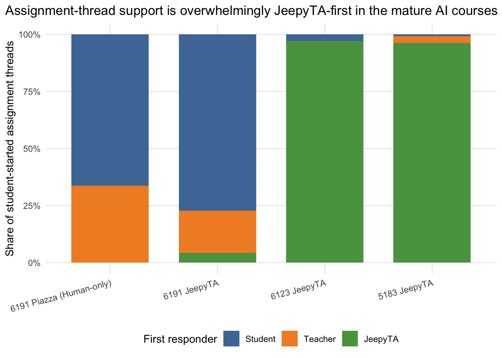
| Omnibus test | Chi-square | df | p |
|---|---|---|---|
| Dataset by first responder role within assignment threads | 474.556 | 6 | 2.54e-99 |
| Dataset | JeepyTA-first? | JeepyTA-first threads | Total assignment threads | Share |
|---|---|---|---|---|
| 6191 JeepyTA | JeepyTA | 9 | 211 | 4.3% |
| 6123 JeepyTA | JeepyTA | 66 | 68 | 97.1% |
| 5183 JeepyTA | JeepyTA | 129 | 134 | 96.3% |
This figure makes the niche argument more concrete at the course level. In 6123_JeepyTA and 5183_JeepyTA, assignment-thread support is overwhelmingly JeepyTA-first, which justifies treating those courses as a bot-mediated assignment-support regime. 6191_JeepyTA remains useful here precisely because it contrasts with that pattern: JeepyTA is available, but rarely becomes the first responder in assignment threads.
The move from pooled mature-AI counts to the by-dataset chart is pedagogically helpful because it shows what the pooled result is made of. Pooling can obscure whether a pattern is common to both datasets or driven mostly by one dataset. Here, the by-course figure shows that the mature-AI pattern is present in both 6123_JeepyTA and 5183_JeepyTA, while 6191_JeepyTA functions as a qualitatively different low-integration case.
The omnibus chi-square test provides a formal companion to that by-dataset plot. Within assignment threads, first-responder role differs strongly across datasets overall (χ²(6) = 474.56, p < .001). That result does not by itself specify which datasets differ from which others, but the descriptive bars make the main source of the effect clear: 6123_JeepyTA and 5183_JeepyTA are dominated by JeepyTA-first assignment support, whereas 6191_JeepyTA and the human-only Piazza forum are not. In that sense, the test supports the interpretation that the mature AI courses share a distinct assignment-response regime rather than merely showing isolated dataset-specific anomalies.
In the two mature AI-supported courses, 195 of 202 assignment threads (96.5%) are JeepyTA-first. In low-integration 6191_JeepyTA, that drops to 9 of 211 (4.3%). That is enough justification for treating 6123 and 5183 as the main mature-AI assignment regime while keeping 6191_JeepyTA as a contextual low-penetration comparison.
Once that niche is established, the next question is what student discourse looks like when different responders actually take up the interaction inside the AI-supported forums.
RQ2C. Responder-dependent SRL across forums
Once the assignment niche is established, this subsection asks what student discourse looks like under different immediate responder contexts.
Given JeepyTA’s concentration in assignment-support activity, responder-role contrasts should not be read as if they were evenly sampled from the whole forum. Instead, they help show how student discourse differs depending on who takes up the interaction next across the four course contexts, including the human-only Piazza forum where JeepyTA is absent.
This subsection changes the unit of interpretation again. Instead of asking about whole threads, it asks about labeled student sentences and the role of the next non-self responder associated with the post they come from. The key explanatory variable is therefore next_partner_role, which can be Student, Teacher, or JeepyTA. This is not a perfect measure of the whole conversation that follows, but it is a useful local indicator of the interaction context immediately surrounding a student contribution.
Construct responder-role proxy
This is another construction step. The goal is to attach a simple responder-context variable to labeled student discourse.
| Dataset | Student | Teacher | JeepyTA |
|---|---|---|---|
| 6191 Piazza (Human-only) | 4,639 | 540 | 0 |
| 6191 JeepyTA | 5,155 | 477 | 92 |
| 6123 JeepyTA | 520 | 334 | 2,738 |
| 5183 JeepyTA | 2,609 | 315 | 2,934 |
Who follows student posts?
This is a support-count figure as much as a substantive one. It shows how common each responder context actually is before interpreting the SRL profiles.
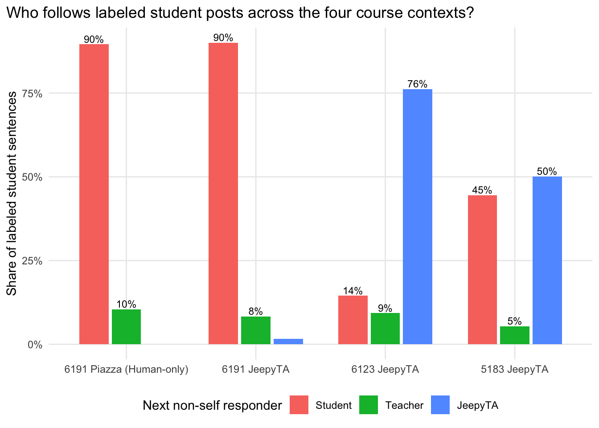
The follow-up distribution makes the uptake pattern visible before moving to SRL composition. The human-only Piazza forum contains no JeepyTA-followed cases by design, 6191_JeepyTA contains only a small JeepyTA-followed subset, and 6123_JeepyTA and 5183_JeepyTA show much more substantial bot uptake. That contrast helps place the responder-role composition results on a full continuum from human-only to limited-AI to mature AI-supported forums.
This distribution plot is worth pausing on because it tells us how much data are actually available in each responder category. If one responder role is extremely rare in a course, the corresponding SRL profile should be interpreted cautiously. This is especially relevant for 6191_JeepyTA, where the small JeepyTA-followed subset is substantively informative—it signals low integration—but also less stable as a basis for fine-grained composition claims.
Descriptive responder-role distributions
This is the main descriptive composition figure for responder-role contexts. As in RQ1, it is easier to read this figure first and then interpret the multinomial model as a formal summary.
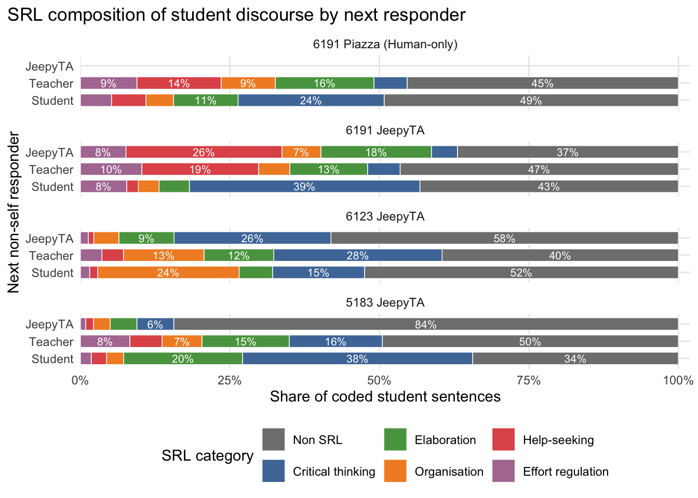
Read descriptively, the composition figure suggests that JeepyTA-followed posts are often more Non-SRL-heavy than student-followed posts, while student-followed posts are relatively richer in categories such as Critical thinking and Elaboration. Teacher-followed posts show a more mixed profile that varies by course, and the Piazza facet provides the human-only comparison point for what responder-role differences look like when JeepyTA is absent. The main point is not that each responder role produces a perfectly fixed discourse type, but that responder role is associated with meaningfully different SRL profiles across the broader forum ecology.
This figure is deliberately descriptive before the model is introduced. It shows the full category composition for each responder-role context rather than jumping directly to model coefficients. This matters because regression output is easier to interpret once we already know the broad shape of the distributions it is summarizing.
Pooled multinomial model
The model below should be read as a categorical-outcome analogue of the descriptive stacked bars above. It estimates the same general pattern in model form while adjusting for dataset.
It is worth stating the analysis sample explicitly. This model is fit on partner_source, which pools all labeled student sentences from the four course contexts carried forward in this subsection: the human-only 6191_Piazza forum, low-integration 6191_JeepyTA, and the two mature AI-supported courses 6123_JeepyTA and 5183_JeepyTA. So this is not a bot-mediated-courses-only model. Instead, it is a pooled responder-context model across the broader forum ecology, with dataset_name included so that the responder-role contrasts are estimated while accounting for baseline differences between datasets.
| SRL category | Teacher vs Student | JeepyTA vs Student | JeepyTA vs Teacher |
|---|---|---|---|
| Critical thinking | 0.29 [0.25–0.35]*** | 0.17 [0.15–0.19]*** | 0.59 [0.49–0.70]*** |
| Elaboration | 1.15 [0.98–1.35] | 0.23 [0.20–0.27]*** | 0.20 [0.17–0.24]*** |
| Organisation | 1.22 [0.98–1.50] | 0.19 [0.15–0.24]*** | 0.16 [0.12–0.20]*** |
| Help-seeking | 3.78 [3.13–4.55]*** | 0.61 [0.44–0.83]** | 0.16 [0.12–0.22]*** |
| Effort regulation | 1.65 [1.35–2.01]*** | 0.28 [0.20–0.39]*** | 0.17 [0.12–0.24]*** |
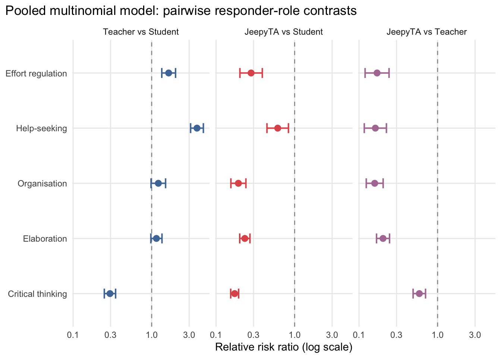
The multinomial model sharpens the descriptive pattern by pooling across the four course contexts while adjusting for baseline differences between datasets. The expanded table and plot report all three practically relevant pairwise responder comparisons: Teacher versus Student, JeepyTA versus Student, and JeepyTA versus Teacher. The most important interpretive caution is that these are relative-to-Non-SRL contrasts, not absolute prevalence statements taken one category at a time. So when the JeepyTA versus Student ratios fall below 1 across several SRL categories, the substantive reading is not just that those individual SRL categories are lower in isolation. It is that JeepyTA-followed posts are more Non-SRL-heavy overall, with categories such as Critical thinking, Elaboration, Organisation, and Effort regulation appearing less often relative to Non-SRL than they do in student-followed posts. Teacher-followed posts, by contrast, stand out most clearly for Help-seeking rather than Organisation. The direct JeepyTA versus Teacher contrast is useful because it isolates the difference between the two non-student responder contexts directly rather than asking us to infer that gap indirectly from separate baselines.
That pooled framing matters for interpretation. The JeepyTA contrasts are informed only by the AI-course rows, because Piazza has no JeepyTA cases by design, but the model itself is still estimated in the full four-context dataset rather than only inside the two mature bot-mediated courses. In other words, the section is asking how responder-linked SRL profiles differ across the whole observed ecology, not only inside the mature bot-mediated subset.
Multinomial regression is appropriate here for the same reason it was appropriate in the temporal RQ1 model: the outcome variable, srl_label, has more than two categories. Non-SRL is used as the reference category, and the model estimates how the relative odds of the other SRL categories change across responder-role contexts while controlling for dataset. The coefficient table is reported as relative risk ratios because those are easier to interpret than raw log-odds. A ratio below 1 means that a category is less prevalent relative to Non-SRL in the numerator responder context than in the denominator responder context; a ratio above 1 means it is more prevalent relative to Non-SRL.
Responder-role differences become more interpretable once we examine the shape of the assignment-support conversations in which JeepyTA is most concentrated.
RQ2D. Conversation shape in the assignment-support regime
This subsection asks a more specific follow-up question than the earlier responder analyses: once a student receives a response in an assignment thread, what kind of conversation tends to unfold next? The goal is not to claim a single causal mechanism, but to describe how three assignment-thread regimes differ in their structure and trajectory of student-facing discussion: mature AI bot-mediated threads, Piazza peer-mediated threads, and Piazza teacher-mediated threads.
The logic here is to move from who responds? to what kind of conversation follows? The main derived variable is support_group, which collapses thread contexts into analytically meaningful regimes. That regrouping makes the comparisons easier to read without losing the substantive contrast of interest.
Core conversation-shape metrics
This figure is the clearest entry point into the conversation-shape analysis because it shifts attention away from individual SRL labels and toward the structure of the thread itself. The question here is not only what kind of discourse appears?, but also what kind of interactional pathway does the thread create after the first response?
Each panel captures one concrete structural feature of the discussion:
- Later student posts asks how much additional student participation occurs after the first response.
- Additional students joining asks whether the conversation attracts more students beyond the original poster.
- Unique SRL categories after response asks how much variety of post-response SRL-coded discourse appears later in the thread.
- Thread ends after first response asks how often the conversation effectively closes immediately after the first reply.
The reading strategy is straightforward: compare the three support regimes within each panel, not across panels. The x-axes differ because the metrics are on different scales. Higher values are not always “better”; instead, they indicate different kinds of conversational structure. For example, a high value on later participation suggests a more expansive thread, whereas a high value on thread-ending suggests a more closure-oriented thread.
The bootstrap intervals describe the estimated average level of each metric for each regime, and the Kruskal–Wallis tests provide an omnibus check of whether the underlying distributions differ across regimes. That combination is useful pedagogically: the figure shows the structural pattern directly, while the test asks whether the regime differences are plausibly larger than random fluctuation alone.
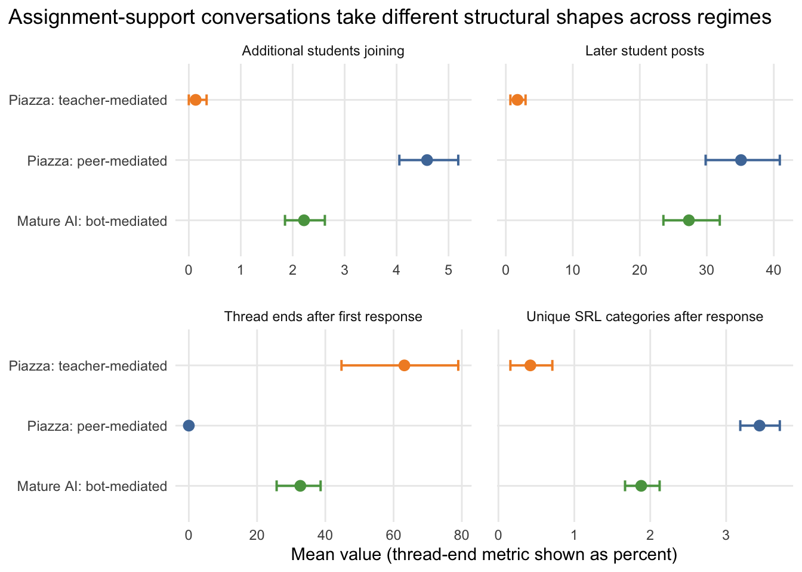
| Metric | Kruskal–Wallis H | p |
|---|---|---|
| Later student posts | 52.911 | 3.24e-12 |
| Additional students joining | 90.172 | 2.63e-20 |
| Unique SRL categories after response | 81.434 | 2.07e-18 |
| Thread ends after first response | 53.768 | 2.11e-12 |
Taken together, these metrics support a clear structural interpretation. Piazza peer-mediated assignment threads are the most expansive: they recruit more later student participation, bring in more additional students, and sustain broader post-response SRL diversity. Piazza teacher-mediated assignment threads are the most closure-oriented: they are more likely to end after the first response and show relatively limited later student uptake. The mature AI bot-mediated threads sit between those two poles, which is why they are best described as a distinct middle regime rather than as a simple copy of either human pattern.
The test table should be read as an omnibus companion to the figure rather than as a substitute for it. Each Kruskal–Wallis result asks whether the three regimes differ on that structural metric overall; the figure then shows the direction and shape of those differences.
SRL trajectories from opening post to later student discourse
This figure is especially useful for seeing how discourse changes after interaction begins. It is the conversation-level counterpart to the course-level temporal plots in RQ1. To make the trajectory view more complete, it includes the broad SRL-coded share panel alongside the substantive codebook-category shares.
To accompany the figure, the document now reports an explicit statistical check on within-thread change. For each metric, the opening-post value is paired with the later-student-discourse value from the same thread, a change score is computed (After first response − Opening post), and a Kruskal–Wallis test asks whether those change scores differ across the three support regimes. That is not a full repeated-measures model, but it does align closely with the visual question raised by the trajectory plot: do the regimes differ not just in level, but in how discourse changes after interaction begins?
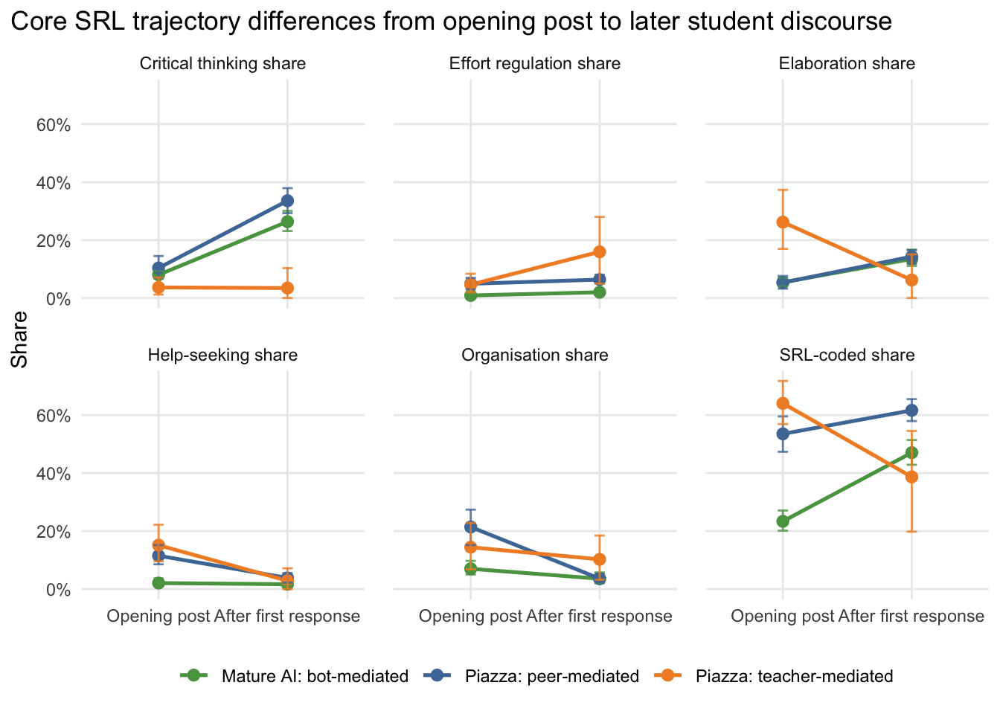
| Trajectory metric | Kruskal–Wallis H | p |
|---|---|---|
| SRL-coded share | 24.429 | 4.96e-06 |
| Critical thinking share | 20.825 | 3.01e-05 |
| Elaboration share | 12.372 | 2.06e-03 |
| Organisation share | 29.923 | 3.18e-07 |
| Help-seeking share | 25.839 | 2.45e-06 |
| Effort regulation share | 2.617 | 2.70e-01 |
The trajectory plots make that middle-regime interpretation more concrete. In peer-mediated Piazza threads, student discourse begins relatively SRL-rich and becomes even more Critical-thinking-heavy after the first response, which looks like collaborative sensemaking that expands rather than closes. In teacher-mediated Piazza threads, student openings are often strongly SRL-coded, but later student discourse collapses sharply, which looks more like issue resolution or instructional closure. The mature AI bot-mediated threads again sit between those poles: they begin with comparatively low SRL-coded share, but later student discourse becomes substantially more SRL-coded, especially more Critical thinking and Elaboration, while Help-seeking remains low. Keeping the SRL-coded share panel is still useful because it provides the broad summary, while the category panels show which substantive SRL forms account for that overall shift.
These trajectory plots are helpful because they show change within threads rather than only aggregate composition. The phase variable has two levels: Opening post and After first response. The test table above should therefore be read as a change-focused companion to the figure: it asks whether those opening-to-later shifts differ across regimes overall, while the plotted lines show how they differ.
RQ3 — Grade outcomes and mediated pathways
RQ3 asks whether forum-interaction patterns in the JeepyTA courses are plausibly associated with grade outcomes, and whether SRL-rich discourse serves as an intermediate pathway. This section presents pooled exploratory mediation models across the JeepyTA courses that had usable grade data (6191_JeepyTA, 6123_JeepyTA, 5183_JeepyTA). The human-only 6191_Piazza course is excluded because the processed tables do not include a usable grade outcome. That omission matters substantively: these models cannot provide a human-only versus human+AI outcome contrast, and any observed grade associations may still reflect broader course-family differences that are not separable from JeepyTA exposure in the available data. As elsewhere in this analysis, the framing is explicitly non-causal: these are plausibility checks, not identified causal estimates.
It helps to think of this section as asking a structured sequence of association questions. First, is a given interaction pattern associated with an SRL mediator? Second, is that mediator associated with grade after accounting for the interaction pattern? Third, does the product of those two relationships suggest a nonzero indirect pathway? None of those steps identifies causality here, but together they can indicate whether a particular explanatory story is at least compatible with the observed data.
The easiest way to read RQ3 is:
- understand the mediation pieces,
- inspect the pooled feature table logic,
- read the indirect-effect plots first,
- then use the coefficient tables as supporting detail.
RQ3 framing and model structure
This is the conceptual guide to the mediation analysis. If the later model outputs feel technical, come back to this subsection and map each reported quantity back to the path structure described here.
Each mediation model estimates:
- the a-path: predictor → mediator
- the b-path: mediator → grade (\(z\)-standardised within course), controlling for the predictor
- the direct effect (\(c'\)): predictor → grade, controlling for the mediator
- the total effect (\(c\)): predictor → grade without the mediator
- the indirect effect: \(a \times b\)
The indirect effect is bootstrapped (400 draws). The key inferential question is whether the 95% bootstrap CI excludes zero. All models control for course (dataset_pretty factor) and log-transformed posting volume. HC3 heteroskedasticity-robust standard errors are used for the a-, b-, and direct-effect p-values; the bootstrap CI uses vanilla OLS resampling.
Those modeling choices are pragmatic. Bootstrapping is used for the indirect effect because products of coefficients often have awkward, non-normal sampling distributions, especially in moderate samples. The log-transformed posting-volume covariate is included because more active students can differ from less active students in both interaction exposure and SRL production. Course is included as a factor because the pooled models span multiple course contexts. HC3 robust standard errors are used because they provide a more cautious correction when residual variance may not be constant across students.
The mediation analysis is now intentionally narrow. Only three overall-course predictor–mediator combinations are retained, each using overall SRL share as the mediator and one responder-follow share as the predictor:
| Model | Predictor | Mediator | Volume covariate |
|---|---|---|---|
| 1 | Overall peer-follow share | Overall SRL share | Overall log coded |
| 2 | Overall JeepyTA-follow share | Overall SRL share | Overall log coded |
| 3 | Overall teacher-follow share | Overall SRL share | Overall log coded |
Fully AI-supported pooled mediation
This first model set uses only the two mature AI-supported courses, so it should be read as the primary pooled outcome analysis in the document.
The unit of analysis here is the student. Each predictor is a whole-course responder-follow share: overall_follow_student_share, overall_follow_teacher_share, and overall_follow_jeepyta_share represent the proportion of a student’s posts that were followed by a peer, a teacher, or JeepyTA, respectively. The mediator is overall_srl_share, the student’s overall share of coded sentences labeled as SRL rather than Non-SRL, and the outcome is grade_z, the within-course standardized grade. All three models also adjust for overall posting volume and course.
This setup is worth stating explicitly because the predictors are not isolated treatment indicators. They are summaries of the interaction ecology each student experienced and generated over the full course. A higher JeepyTA-follow share, for example, does not mean that JeepyTA caused a particular grade outcome; it means that a larger fraction of that student’s observed forum participation fell into a JeepyTA-followed interaction context. The mediation model then asks whether that interaction pattern is associated with grade partly through overall SRL production.
Because only the three overall responder-follow predictors are retained, this section is now a focused test of three explanatory stories: whether more peer-followed, teacher-followed, or JeepyTA-followed interaction is associated with better or worse grades through differences in students’ overall SRL share.
| Model | a-path | a p | b-path | b p | Indirect (a × b) | 95% bootstrap CI | CI excludes zero |
|---|---|---|---|---|---|---|---|
| Overall peer → overall SRL → grade | 0.044 | 0.527 | 3.269 | 0.016 | 0.142 | [-0.47, 0.82] | No |
| Overall JeepyTA → overall SRL → grade | −0.257 | 0.006 | 2.565 | 0.088 | −0.660 | [-1.73, -0.01] | Yes |
| Overall teacher → overall SRL → grade | 0.344 | 0.001 | 2.864 | 0.046 | 0.986 | [0.14, 2.12] | Yes |
The table above should be read column by column rather than row by row. The a_path asks whether a responder-follow share is associated with overall SRL share. The b_path asks whether overall SRL share is associated with grade once the responder-follow predictor is included. The indirect_ab column then multiplies those two paths, and the bootstrap interval indicates whether that mediated association is distinguishable from zero.
In the fully AI-supported subset (n = 67), the three models tell a differentiated story. The peer-follow model shows little evidence on the a path (a = 0.044, p = .527), even though the b path from overall SRL share to grade is positive (b = 3.269, p = .016); correspondingly, the indirect-effect interval crosses zero (95% CI [-0.47, 0.82]). The JeepyTA-follow model shows the opposite pattern on the a path: higher JeepyTA-follow share is associated with lower overall SRL share (a = -0.257, p = .006), and the resulting indirect effect is negative with a bootstrap interval excluding zero (95% CI [-1.73, -0.01]). The teacher-follow model shows a positive a path (a = 0.344, p < .001), a positive b path (b = 2.864, p = .046), and a positive indirect effect with a nonzero bootstrap interval (95% CI [0.14, 2.12]).
That pattern is substantively useful. Within the mature AI-supported courses, teacher-followed interaction is associated with higher grades partly through higher overall SRL production, whereas JeepyTA-followed interaction is associated with lower grades partly through lower overall SRL production. The peer-follow pathway is not clearly supported in the mediated form. Because these are observational associations, the most cautious interpretation is still ecological rather than causal: teacher-followed contexts may be linked to more academically elaborated engagement, while JeepyTA-followed contexts may be picking up students whose forum use is concentrated in narrower assignment-support or help-seeking patterns.
The plotting focus on the indirect effect is deliberate. In mediation-style analyses, the indirect pathway is usually the part most closely tied to the proposed explanatory story. The point and interval in the figure therefore summarize the estimated \(a \times b\) pathway for each model. Intervals that cross zero should be read as inconclusive with respect to a mediated pathway. Intervals that stay entirely above or below zero are more compatible with a nonzero mediated association, though still not with a causal claim in this setting.
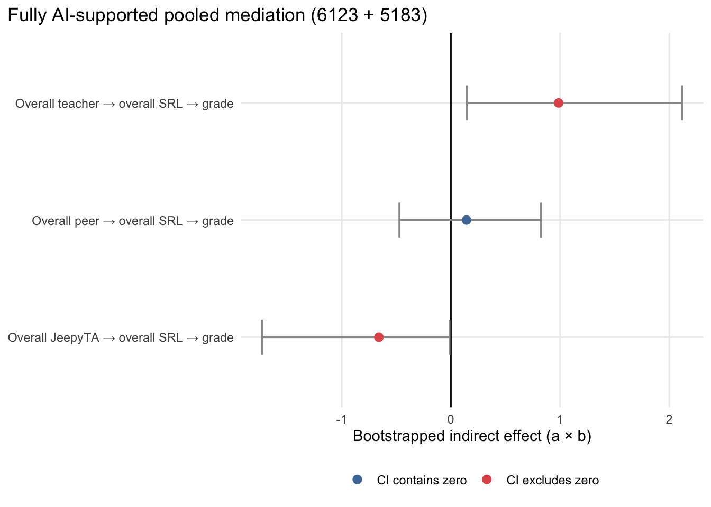
The figure makes the ranking of the mediated pathways easier to see at a glance. The teacher-follow pathway sits clearly on the positive side of zero, the JeepyTA-follow pathway sits clearly on the negative side, and the peer-follow pathway is centered close enough to zero that its interval overlaps both positive and negative values. This visual summary complements the table well: the table provides the path decomposition, while the figure shows which mediated stories remain credible once uncertainty is taken seriously.
It is also important not to overread the sign of the JeepyTA pathway. A negative indirect effect here does not imply that JeepyTA itself harms learning. In this dataset, JeepyTA is heavily concentrated in assignment-support interactions, so a high JeepyTA-follow share is likely entangled with support need, narrower task-focused participation, and lower overall SRL production. The model is therefore most informative as a description of which student-level interaction profiles are associated with higher or lower grades, not as an estimate of the causal effect of interacting with JeepyTA.
Final synthesis
Across the three research questions, a coherent picture emerges. RQ1 shows that the AI-supported courses differ from the human-only baseline in SRL composition, but not in a simple monotonic way. RQ2 helps interpret those differences by showing that mature JeepyTA deployment is concentrated in a specific assignment-support niche with distinctive responder patterns and conversation shapes, so the SRL contrasts are embedded in a different forum ecology rather than produced by AI presence alone. RQ3 then extends that picture cautiously to student outcomes: in the primary fully AI-supported pooled analysis, teacher-followed interaction is associated with a more positive SRL-linked pathway to grade, JeepyTA-followed interaction with a more negative one, and peer-followed interaction with no clearly nonzero mediated pathway.
Taken as a whole, the document is designed to move from easier descriptive questions to more interpretive and model-based ones. The early sections establish that the data are usable and that the AI-supported courses differ in meaningful ways. The middle sections ask how those differences are structured inside the forum. The final sections ask whether some of those structured differences are also associated with grade outcomes. Read in that order, the later statistical models are easier to interpret because they are anchored in earlier descriptive results rather than standing alone.
The three short answers below therefore work best as endpoints, not entry points. They are intended to summarize the argument after we have already seen the descriptive evidence and model checks in the earlier sections.
RQ1 answer
Across the refined RQ1 analyses, the clearest conclusion is that AI-supported forums do not exhibit a single uniform SRL profile. The deployment audit already showed that 6191_JeepyTA is not comparable to the more mature AI-supported courses in terms of JeepyTA reach. Once that distinction is taken seriously, the broad pattern is that the fully AI-supported courses look meaningfully different from the human-only baseline, but not in a way that supports a simple “more AI means more SRL” reading. Instead, the results suggest a reconfiguration of the composition of student discourse, with important heterogeneity across courses and categories.
RQ2 answer
For RQ2, the strongest comparison remains the human-only 6191_Piazza course versus the two mature AI-supported courses, 6123_JeepyTA and 5183_JeepyTA; 6191_JeepyTA is most useful as a contextual low-penetration case rather than as the main AI-supported analogue. The clearest ecological difference is that the mature AI-supported forums contain a JeepyTA-centered assignment-support niche rather than a bot that simply responds across the forum in the same way humans do. Within those AI-supported courses, student discourse also differs depending on who takes up the interaction next: JeepyTA-followed posts are relatively more Non-SRL-heavy than student-followed posts, while teacher-followed posts are especially associated with Help-seeking in the pooled model. Those responder-role contrasts become more interpretable once they are located in the thread ecology of the forum. In the mature AI courses, assignment/problem threads are overwhelmingly JeepyTA-first, and those threads form a distinct middle conversation regime—less expansive than peer-mediated Piazza assignment threads, but less closure-oriented than teacher-mediated Piazza assignment threads. Taken together, these findings support an exploratory ecological interpretation in which JeepyTA appears to occupy a differentiated assignment-support role inside the forum rather than acting as a generic stand-in for peers or instructors. The 6191_JeepyTA course mainly strengthens that interpretation by showing what the forum looks like when JeepyTA is present but not deeply integrated into assignment-thread support.
RQ3 answer
The RQ3 mediation models should be treated as plausibility checks rather than causal estimates. In the primary fully AI-supported pooled analysis, the clearest positive mediated pattern is Overall teacher → overall SRL → grade: students whose posts are more often taken up by teachers also tend to show higher overall SRL share, and that higher SRL share is in turn associated with better grades. The clearest negative mediated pattern is Overall JeepyTA → overall SRL → grade: students with heavier JeepyTA-followed interaction tend to show lower overall SRL share, and that lower SRL share is associated with lower grades. The Overall peer → overall SRL → grade pathway is not clearly supported because its indirect-effect interval crosses zero.
These results should still be interpreted cautiously. The positive teacher-linked pathway is compatible with a story in which teacher-mediated interaction accompanies more SRL-rich engagement, but it does not prove that teacher uptake causes better outcomes. The negative JeepyTA-linked pathway is even more clearly open to non-causal explanation: in this project, JeepyTA is concentrated in assignment-support contexts, so heavier JeepyTA-followed participation likely marks a different kind of student need and forum use rather than an intrinsically harmful AI effect. The most defensible conclusion is therefore that different interaction ecologies are associated with different SRL-production profiles, and those profiles are in turn associated with grade performance.